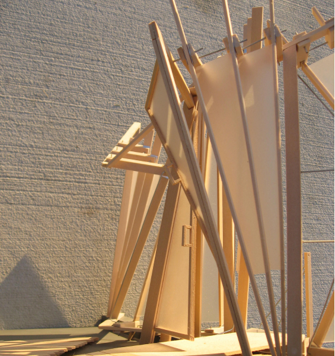
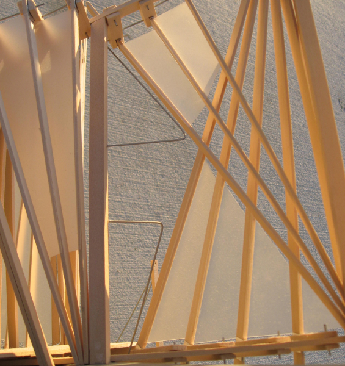

Architecture
My background is in architecture —I graduated from Cal Poly San Luis Obispo right after the great recession of 2008 and was lucky to have landed an internship in Los Angeles. Six years later, I am proud to have worked alongside talented project teams on the Naval Hospital at Camp Pendleton and the U.S. Bank (Vikings) Stadium in Minneapolis.